- Si f es positiva:
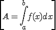
- Si f es negativa:
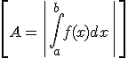
- Si f es positiva y negativa, tenemos que encontrar sus ceros en el intervalo : a1, a2, … ,ak / f(ai) = 0. Y entonces:
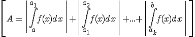
Ejemplo. Calcula el área comprendida entre la curva y = x3 – x, el eje de abscisas, y las rectas x = 0 y x = 2.
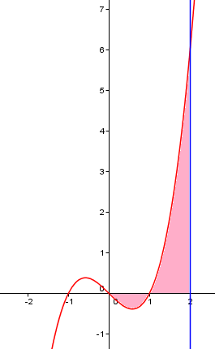
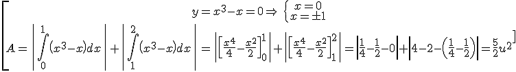
El área comprendida entre las gráficas de dos funciones, f y g, en [a,b]:
– Si f ≤ g o f ≥ g en el intervalo
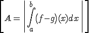
– De otro modo, averiguamos a1, a2, … ,ak in [a,b] / f(ai) = g(ai). Y entonces:
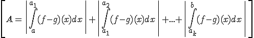
Ejemplo 1. Calcula el área comprendida entre las gráficas de las funciones:: f(x) = x2, g(x) = -2x2 + 3
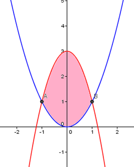
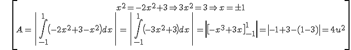
Ejemplo 2. Calcula el área encerrada entre las gráficas de las funciones: f(x) = x3, g(x) = 4x
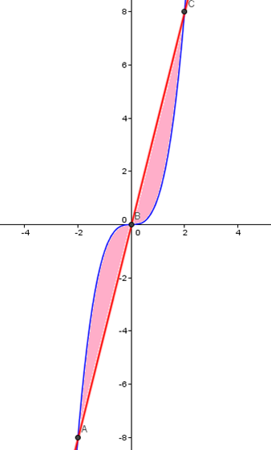
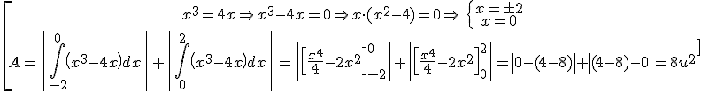
Ejercicios
1.- Calcula el área comprendida entre las gráfica de la función f(x) = x2 y las rectas x = 1 y x = 3
2.- Calcula el área encerrada por la parábola f(x) = x2 - 1 y la recta g(x) = 5 - x
3.- Calcula el área encerrada por las gráficas de las funciones f(x) = x3 - 3x2 + 2x + 1 y g(x) = 1
Soluciones:
1.
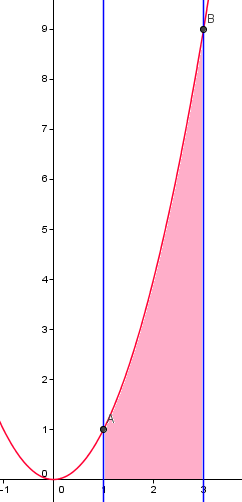 A = 26/3 u2
2.
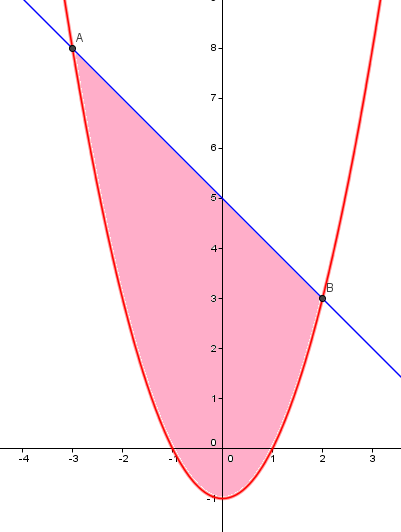 A = 125/6 u2
3.
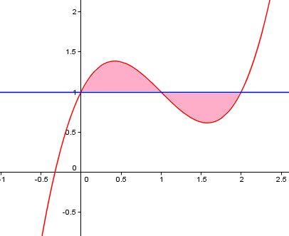 A = 1/2 u2